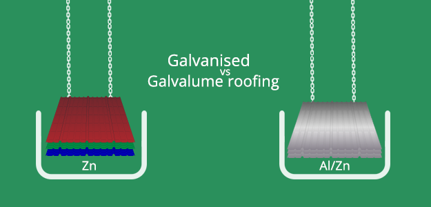
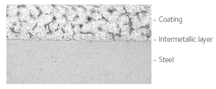
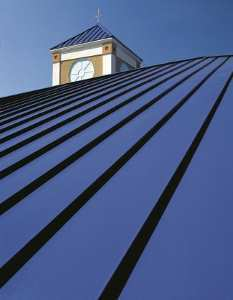
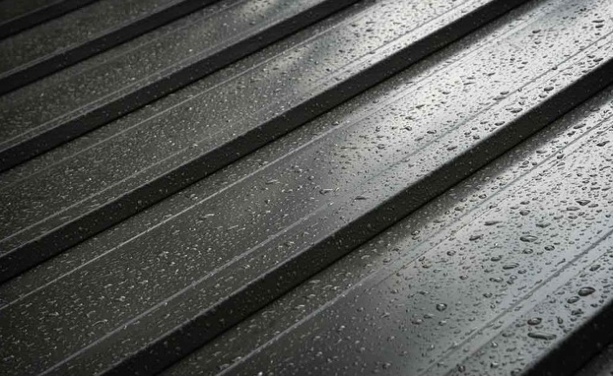
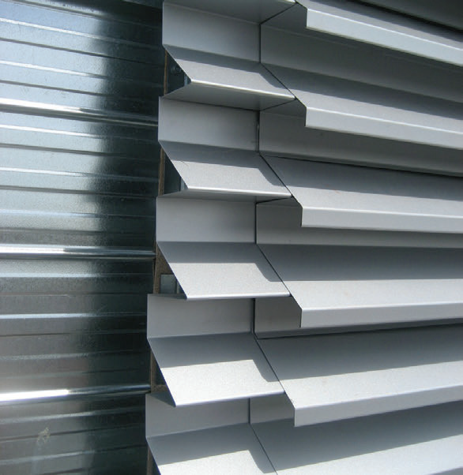
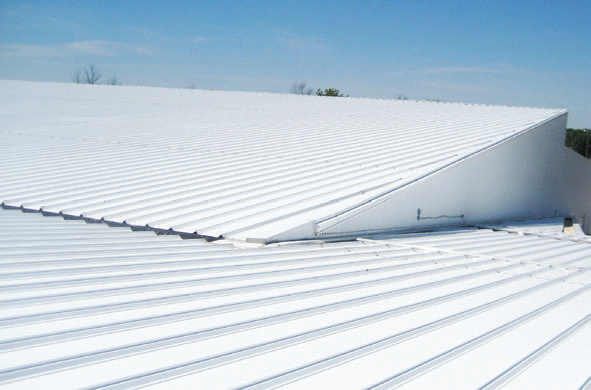

Galvanised VS Galvalume
잘아시다시피, 갈바륨 강판은 55% 알루미늄(Al) - 43% 아연(Zn)-1.6%실리콘으로 이루어진 도금욕에서 용융도금을 통하여 생산되는 알루미늄-아연 합금 도금강판입니다.
갈바륨(Galvalume)은 아연도금강판(Galvanized) 대비 내식성이 매우 우수하여 건물의 외장판넬이나 지붕 등에 사용되는 강판으로 요즘 대세를 이루고 있습니다.
최근에는 고내식성을 요구하는 일부 가전제품에도 사용되고 있는 추세입니다. 그만큼 내식성이 우수하다고 할 수 있습니다.

Galvanized 와 Galvalume 은 영어 철자는 비슷하지만 다릅니다 ^^ Galvanized는 아연도금강판이고 Galvalume은 알루미늄 - 아연 합금도금강판입니다.
사실 아연계 도금강판은 우수한 내식성이 가지고 있고 특히 아연의 희생방식기구에 의해 철의 부식을 억제하는 우수한 특성을 가지고 있습니다.
그런데 갈바륨은 아연의 장점(희생방식성, 내알카리성)은 그대로 살리면서 알루미늄의 장점인 내구성과 내열성, 내산성을 이상적으로 결합시킨 고내식 합금용융도금강판으로 기존의 아연도금강판보다 더 우수하다고 할 수 있습니다.
어때요? 샌드위치판넬 고르실땐 강판이 갈바륨(Galvalume)인지 꼭 확인하셔야겠죠? ^^
 |
 |


내식성이 우수한 갈바륨 강판과
준불연 DK보드 심재로 구성된
대광 준불연 DK보드 판넬 !
대광 준불연 DK보드 판넬은
화재에 강하고
오랜 시간이 지나도
부식 걱정 없습니다 !!